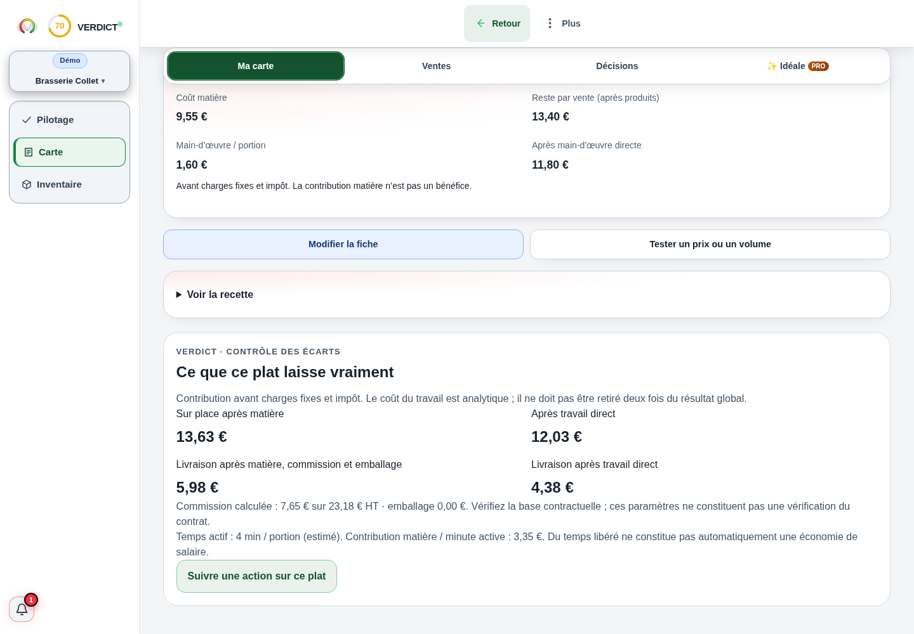

Comprendre le sujet
Vente à emporter : ce qui reste de la commande
Retirez du prix HT matières, emballage, frais de paiement et autres coûts variables de la commande.
La réponse complète et ses limites
Retirez du prix HT matières, emballage, frais de paiement et autres coûts variables de la commande. Vous obtenez sa contribution. Vérifiez ensuite le temps et les charges supplémentaires nécessaires pour servir ce canal. Une vente emportée n’a pas automatiquement la même économie qu’une vente en salle ni qu’une commande livrée.
Comprendre
La méthode, en clair.
LES POINTS QUI CHANGENT LA LECTURE
La méthode, en clair.
Des repères à appliquer dans votre établissement. Le détail reste accessible, sans perdre le fil.
Inclure le conditionnement réellement utilisé
Additionnez boîte, sac, couverts et consommables si vous les fournissez. Un coût moyen peut masquer des formats très différents : une commande de quatre plats ne consomme pas quatre sacs indépendants.
Travaillez sur le prix après remise. Les frais de commande ou de paiement doivent correspondre au canal réel ; n’ajoutez pas une commission de livraison à une vente directe qui n’en porte pas.
Vérifier la capacité au moment de la vente
L’emporter peut utiliser un creux ou saturer le passe en plein service. Comparez ce que la commande ajoute et ce qu’elle déplace. Une vente nouvelle pour le canal n’est pas toujours nouvelle pour le restaurant.
Si une organisation dédiée ajoute un coût fixe, calculez le volume nécessaire pour le couvrir. Les charges communes restent à lire au niveau de l’établissement.
Calculer
LE LABORATOIRE
Vos hypothèses.
Une lecture immédiate.
Modifiez les données, observez le résultat, puis vérifiez ce que le calcul permet de conclure.
Interpréter
UN SCÉNARIO, JUSQU’AU BOUT
Le calcul, jusqu’au bout
Un canal direct, sans commission de livraison
Les 0,30 € sont ici des frais variables supposés. Les 1 350 € ne déduisent pas les charges communes déjà présentes.
Exemple fictif · hypothèses modifiables
| Contribution par commande | 11 € |
|---|---|
| Après le surcoût fixe de période | 1 350 € |
Les montants sont arrondis pour la lecture.
Les calculs gardent leur précision.
Les questions qui restent
Une vente directe n’a-t-elle aucun frais ?
Elle peut avoir emballage, paiement, commande et travail supplémentaires. Ils doivent être relevés, même sans plateforme.
Puis-je utiliser le même prix qu’en salle ?
Testez le résultat et la cohérence de l’offre. Le calcul ne décide pas de la politique de prix à votre place.
Sur quoi repose cette lecture
Les formules et hypothèses sont affichées pour être contrôlées. Les exemples chiffrés sont fictifs et ne constituent pas des statistiques de métier. Les définitions et repères institutionnels utilisés par Verdict sont regroupés dans les sources.
Agir
Votre prochaine action
Relevez le coût du conditionnement et testez le canal sur une plage de capacité disponible.
DANS L’APPLICATION VERDICT
Fiche plat : prix et contribution par canal de vente.

Capture réelle de Verdict — démonstration fictive Brasserie Collet. Ce qu’un plat laisse en salle et en livraison.
Voir l’écran en grand
Ce que ce plat laisse vraiment
Sur place après matière
Livraison après travail direct
Exemple de canaux du modèle fictif ; aucun tarif ni contrat Deliveroo, Just Eat ou Uber Eats n’est vérifié par cette capture.
LES CHIFFRES NE VIVENT PAS SÉPARÉMENT.
Reliez cette décision
au reste de votre activité.
Ventes, carte, inventaire : découvrez la lecture proposée par Verdict, avec vos données et vos hypothèses.